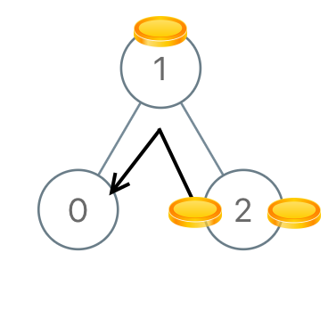

Distribute Coins in Binary Tree
July 26, 2019
Link: Distribute Coins in Binary Tree
Problem description
Given the root of a binary tree with N nodes, each node in the tree has node.val coins, and there are N coins total.
In one move, we may choose two adjacent nodes and move one coin from one node to another. (The move may be from parent to child, or from child to parent.)
Return the number of moves required to make every node have exactly one coin.
Example 1:

Input: [3,0,0]
Output: 2
Explanation: From the root of the tree, we move one coin to its left child, and one coin to its right child.
Example 2:

Input: [0,3,0]
Output: 3
Explanation: From the left child of the root, we move two coins to the root [taking two moves]. Then, we move one coin from the root of the tree to the right child.
Example 3:

Input: [1,0,2]
Output: 2
Example 4:

Input: [1,0,0,null,3]
Output: 4
Note:
1<= N <= 1000 <= node.val <= N
Method
DFS traverse. Count subtree nodes and coins. If they are not equal, then there are moves.
Code
private int move = 0;
/**
* DFS traverse. Count subtree nodes and coins. If they are not equal, then there are moves.
*
* @param root root node
* @return number of moves required to make every node have exactly one coin
*/
public int distributeCoins(TreeNode root) {
dfs(root);
return move;
}
/**
* DFS traversal. Find absolute difference between coins and nodes.
*
* @param r current node
* @return absolute difference between coins and nodes
*/
private int dfs(TreeNode r) {
if (r == null) {
return 0;
}
int left = dfs(r.left);
int right = dfs(r.right);
move += (Math.abs(left) + Math.abs(right));
return r.val + left + right - 1;
}